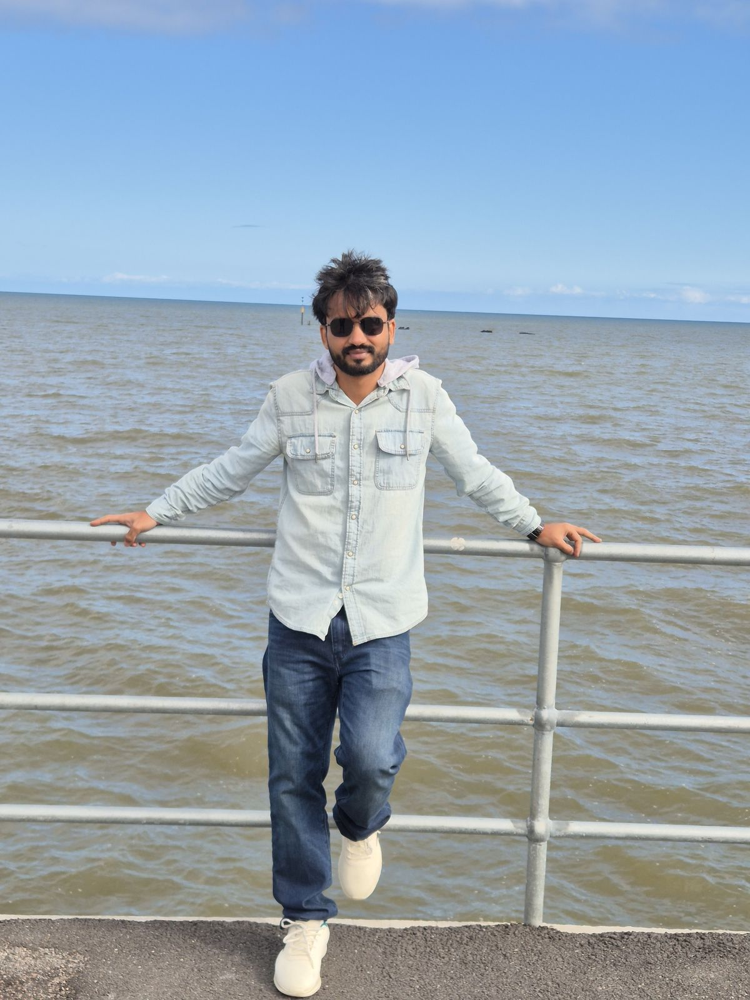
Manish Dwivedi
PhD Candidate, Department of Mechanical Engineering · Indian Institute of Science, Bengaluru
About
Overview
I am a PhD candidate in the Vibro-Acoustics (FRITA) Laboratory at the Indian Institute of Science, Bengaluru, working under the supervision of Dr. Venkata R. Sonti. My research focuses on weakly nonlinear acoustic wave propagation in rigid and flexible waveguides under uniform mean flow, using analytical perturbation methods, frequency-domain numerical schemes, and finite element modeling.
Background
Education
Focus Areas
Research
Rigid Cylindrical Duct
Second-order nonlinear wave propagation with uniform mean flow; corrected branch-selection in the dispersion relation and Lagrangian-density pressure reconstruction.
Rectangular Waveguide
Modal cascade behavior under single-mode and multimode excitation; diagonal self-mode resonance proven analytically.
Flexible Waveguides
Coupled fluid–plate eigenproblem with mean flow; multiple-scales amplitude evolution via Fredholm solvability.
Methods and Tools
MATLAB, COMSOL, ANSYS, Maple, Mathematica, Python, LaTeX; finite element modeling, perturbation theory.
Papers & Talks
Publications
-
Under Review — JSV
Analytical and Numerical Investigations of Weakly Nonlinear Wave Propagation and Modal Interactions in a Rigid Cylindrical Waveguide Containing a Fluid with Mean FlowJournal of Sound and Vibration · Dwivedi, M. and Sonti, V.R.
-
Under Review — JASA
Nonlinear Wave Propagation in a Rectangular Waveguide with a Uniform Mean FlowJournal of the Acoustical Society of America · Dwivedi, M. and Sonti, V.R.
-
Accepted — ASME IMECE 2026
Frequency-Domain Analysis of Nonlinear Acoustic Wave Propagation in a Two-Dimensional Rigid-Walled Waveguide with Uniform Mean FlowDwivedi, M. and Sonti, V.R.
-
Accepted — Internoise 2026
Weakly Nonlinear Multimodal Wave Propagation in a Two-Dimensional Flexible Waveguide Carrying a Fluid with Mean FlowInternoise 2026, Adelaide · Dwivedi, M. and Sonti, V.R.
-
Internoise 2025
Nonlinear Acoustical Wave Interactions in a Rigid Cylindrical Waveguide with Mean FlowProceedings of Internoise 2025 · Dwivedi, M. and Sonti, V.R.
Experience
Teaching
Teaching Assistant, Indian Institute of Science, Bengaluru
- Sound and Structural Vibration (NPTEL) — Jan–Apr 2026
- Fundamentals of Acoustics (NPTEL) — Jul–Oct 2024
- Engineering Mathematics — Aug–Nov 2024
- Vibrations of Plates and Shells (NPTEL) — Jul–Oct 2022, Jul–Oct 2023
Recognition
Awards & Honors
- Institute Gold Medal, M.Tech, NIT Durgapur (2021) — ranked first in department
- Qualified GATE, Mechanical Engineering (2018 and 2019)
Off the Clock
Photography
Some mobile photography.
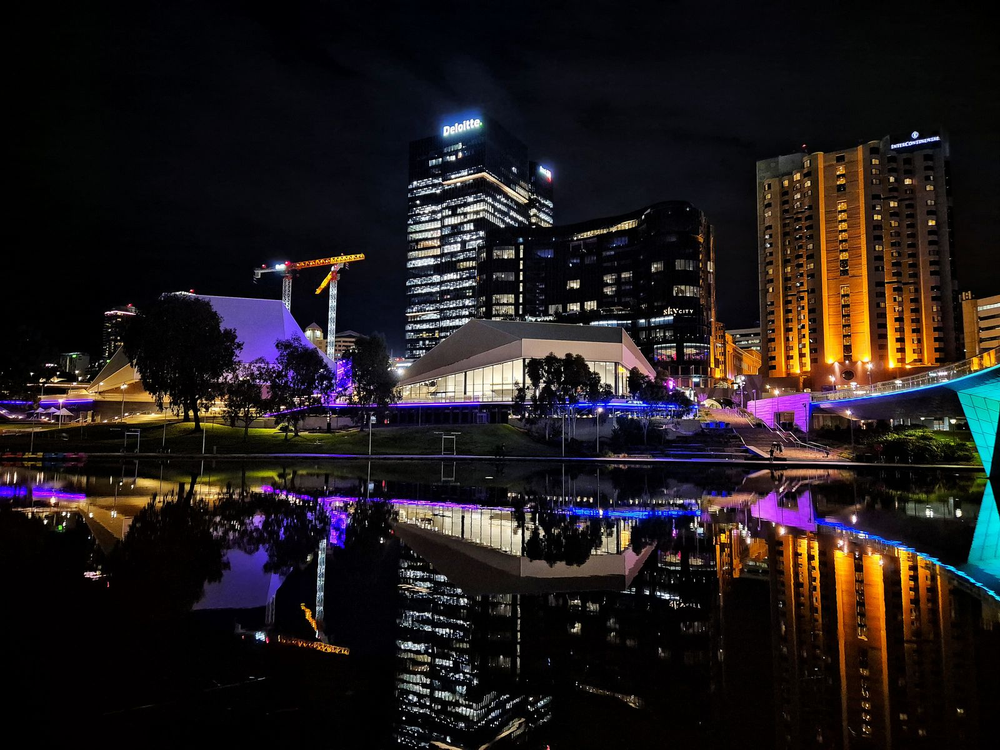
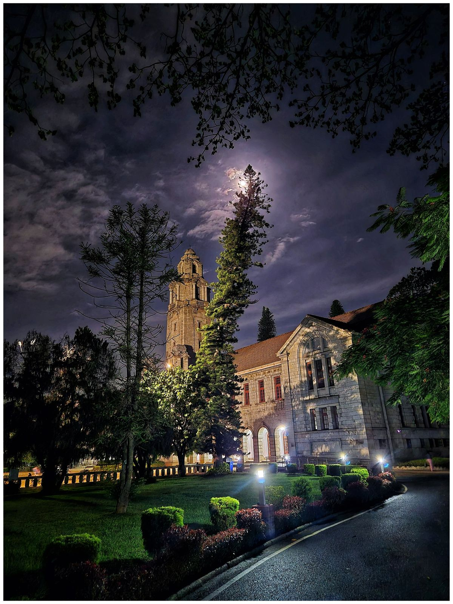
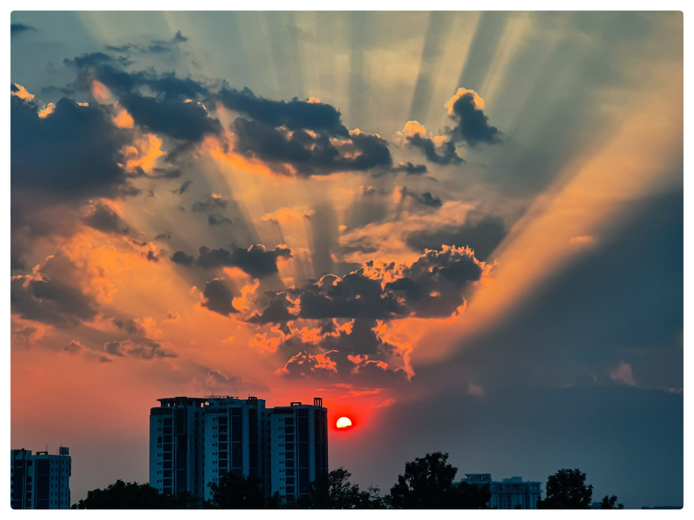
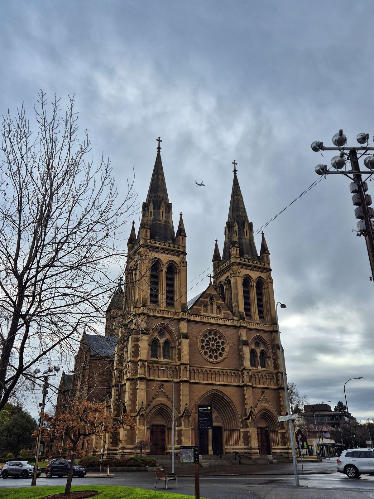
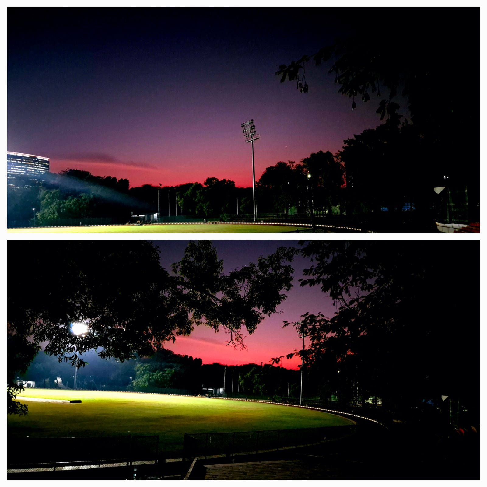
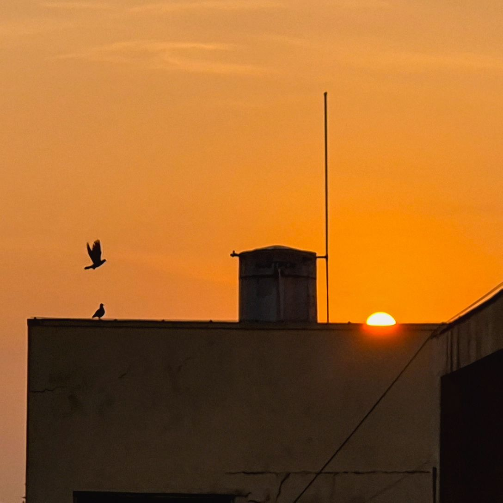


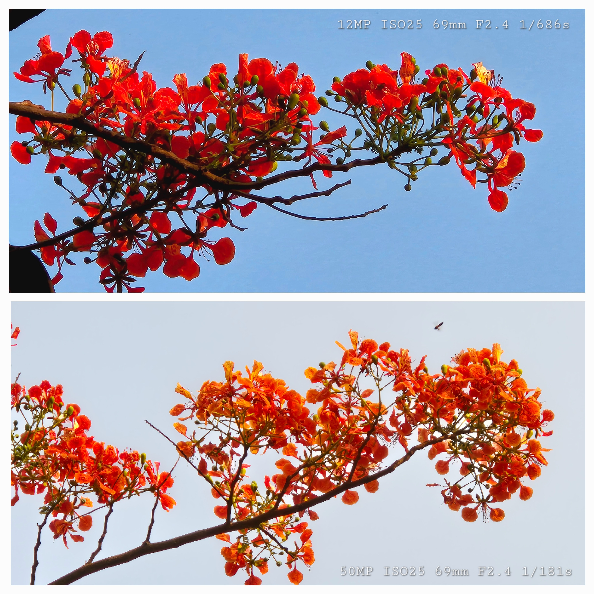
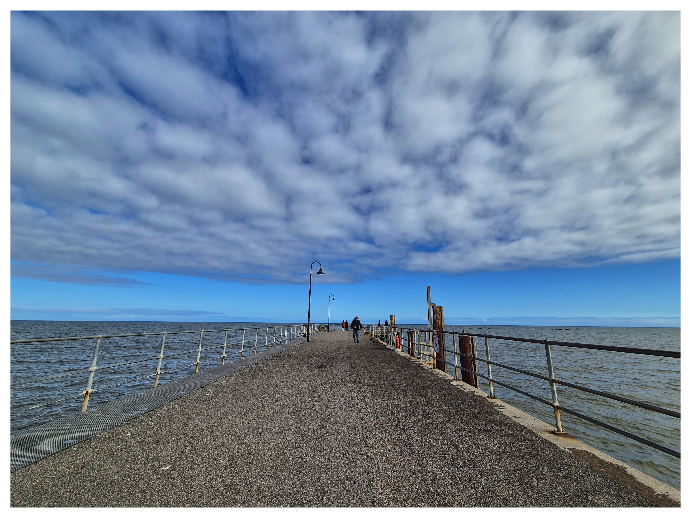

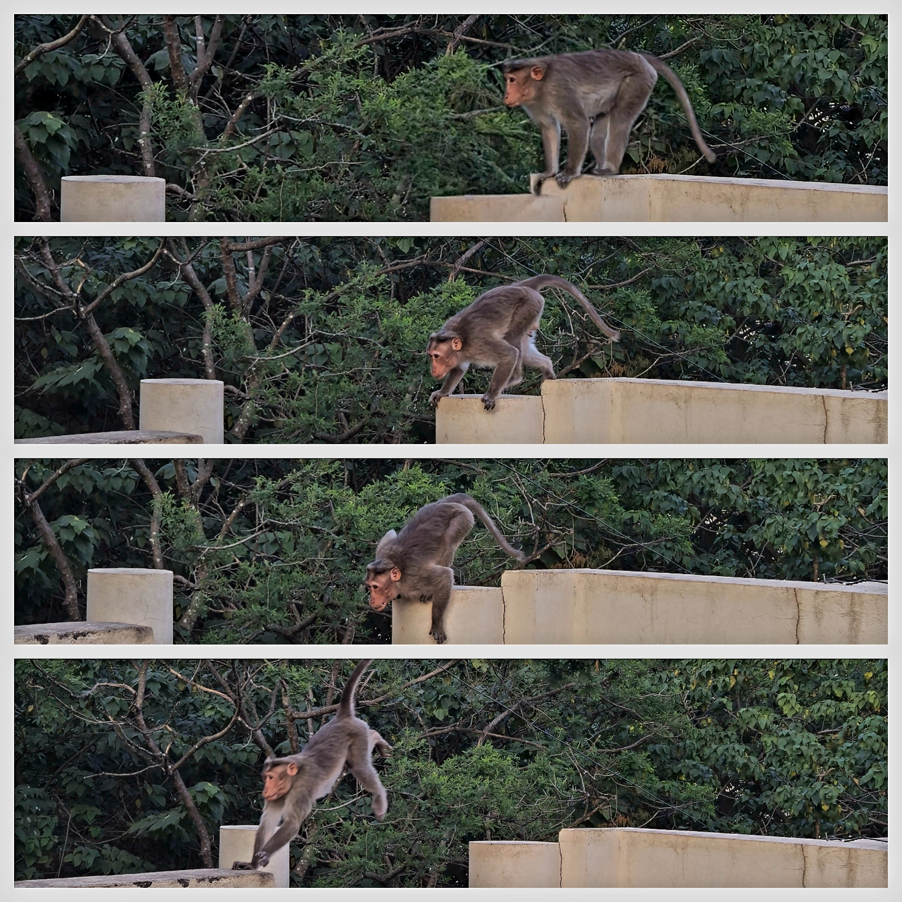
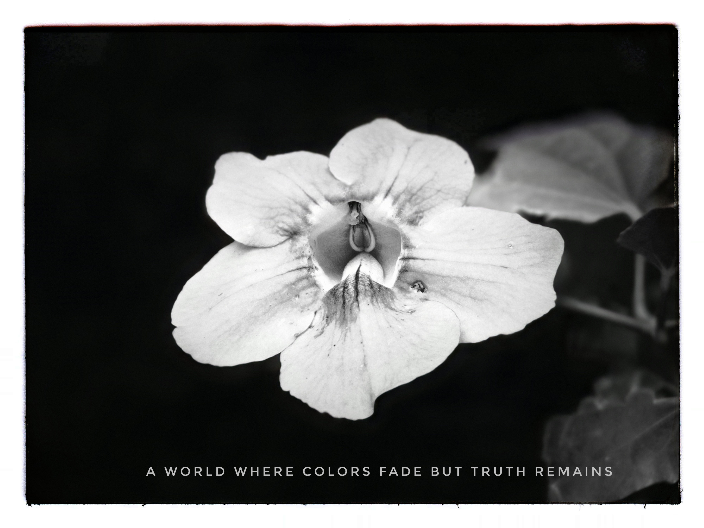
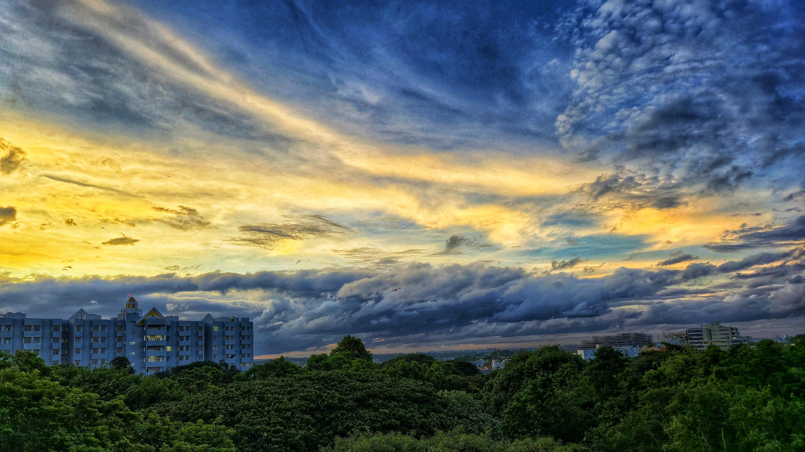